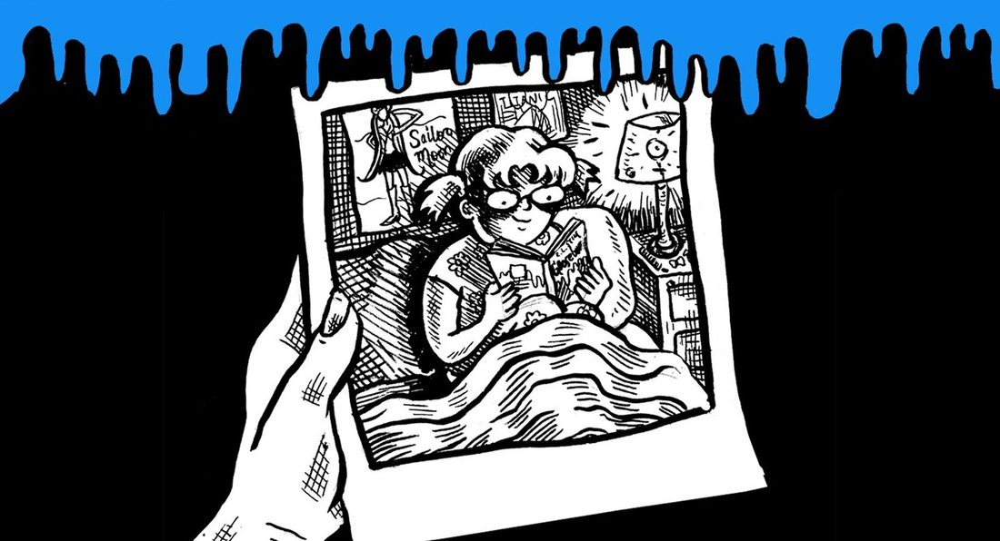

The Haunted Mask, and learning to love reading
Written and illustrated by Elizabeth Beier · Art direction by Rachel Orr
On growing up inside R. L. Stine’s Goosebumps, and the one that stuck.


![Five hand-drawn 'Goosebumps' paperback covers scattered across a black background under a dripping-slime border, their logos lettered in bright blue over R.L. Stine's name. Visible covers include a snarling green mask labeled 'THE HAUNTED MASK,' a gaunt staring face over the number '1/2' for 'THE CURSE OF CAMP COLD LAKE,' a hand reaching through boards for 'STAY OUT OF THE BA—,' a wide-eyed ventriloquist dummy for '— OF THE LIVING —,' and one lettered 'WELCOME TO DEAD HOUSE.' The blue caption bar reads 'R.L. STINE'S HORROR SERIES FOR YOUNGER READERS OFFERED A BALANCED MIX OF MALE AND FEMALE PROTAGONISTS — IN ADDITION TO TWIST ENDINGS AND SPECTACULARLY SPOOKY COVER ART.'](comics/lily-goosebumps-03.jpg)
![A wide-eyed girl with long pale hair claps a hand to her cheek in shock as she opens a sandwich and finds a fat blue worm between the bread slices; her balloon reads 'OH! IT'S A WORM!' Behind her two grinning boys point and laugh, one saying 'GOTCHA!', with blue 'HA!' sounds floating around them under a dripping-slime border. The blue caption bar reads 'MY FAVORITE WAS "THE HAUNTED MASK," THE 11TH "GOOSEBUMPS" BOOK. ELEVEN-YEAR-OLD CARLY BETH IS TORMENTED BY BULLIES WHO LIKE TO SCARE HER. THEY EVEN PUT A WORM IN HER SANDWICH!'](comics/lily-goosebumps-04.jpg)
Published by The Lily. Republished here in full by the author. Back to all work →